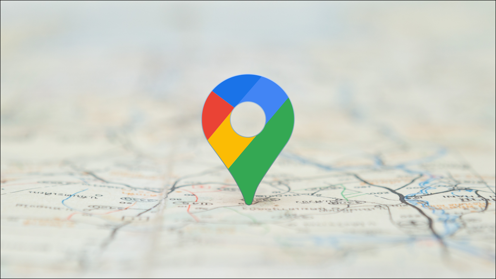

Telusuri kebudayaan, destinasi wisata, kuliner dan ciri khas dari setiap kecamatan di Kabupaten Tuban
Air Terjun Gajahan adalah destinasi wisata alam yang terletak di Desa Dikir, Kabupaten Tuban. Air terjun ini menawarkan pesona keindahan alam yang masih alami dan belum banyak dijamah.
Dikelilingi oleh tebing batu dan pepohonan hijau, Air Terjun Gajahan menjadi tempat ideal untuk bersantai, berfoto, atau menjelajah alam. Perjalanan menuju lokasi pun menambah kesan petualangan tersendiri karena melewati jalan setapak yang memacu adrenalin. Keindahan dan ketenangan tempat ini menjadikannya salah satu surga tersembunyi di wilayah Tuban yang layak untuk dikunjungi.
Klik gambar peta untuk melihat lokasi di Google Maps
